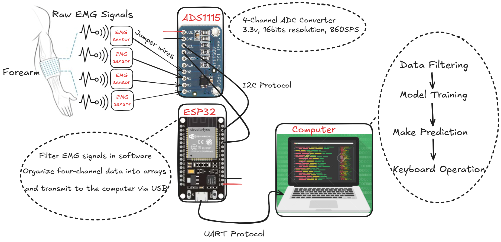

This project focuses on real-time gesture recognition using electromyography (EMG) signals, aiming to support applications such as prosthetic control and human-computer interaction.
The hardware system consists of multiple OY Motion EMG sensors, an ADS1115 16-bit ADC for high-resolution signal acquisition, and an ESP32 microcontroller for data collection and preprocessing. EMG data is sampled at 400 Hz across several hand gestures, with careful electrode placement and stable sensor positioning to ensure signal quality.
The software architecture includes Arduino-based control code for the ESP32 and Python scripts for advanced signal filtering, feature extraction, and machine learning. An M5 model is trained on labeled gesture data to classify five distinct hand movements: close, fist, wave left, wave right, and hold.
The system supports both offline and real-time testing, with gesture predictions mapped to keyboard actions for demonstration. Performance evaluation covers accuracy, latency, and usability, with further improvements explored through model optimization and hardware enhancements.
In offline testing with recorded data for the five gestures (close, fist, wave left, wave right, hold), the system achieved 100% classification accuracy. This demonstrates the effectiveness of our signal processing and machine learning pipeline for gesture recognition tasks.
In dynamic real-time testing, the system was also able to recognize all five gestures and output the corresponding keyboard operations. However, there were noticeable fluctuations and prediction instability during continuous use, indicating room for further improvement in model robustness and real-time performance.
Watch the demo video below: